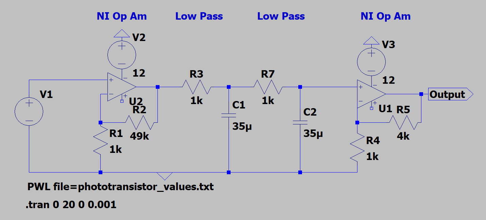
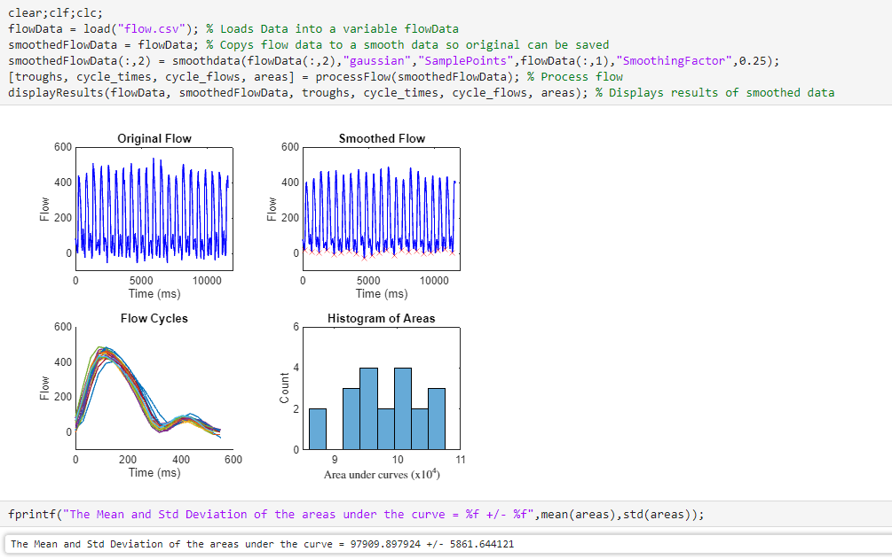

Projects

Gru-mobile: Autonomous Toy Development
Skills: Embedded Systems, Microcontrollers, C Programming, 3D Printing, Team Leadership
Designed a marketable children's toy with an ATmega328P microcontroller for real-time motion tracking using infrared and ultrasonic sensors.
Read More
Analog Signal Processing: Pulse Oximeter
Skills: LTspice, MATLAB, Circuit Design, Signal Processing
Designed and simulated a signal filtration system for LED-based pulse oximeters, optimizing signal clarity for accurate readings.
Read More
Digital Signal Processing & Filtering
Skills: MATLAB, Digital Signal Processing, Biomedical Data Analysis
Developed a MATLAB pipeline to process left ventricle MRI flow data, applying digital filtering and numerical integration to segment cardiac cycles and estimate stroke volume.
Read More